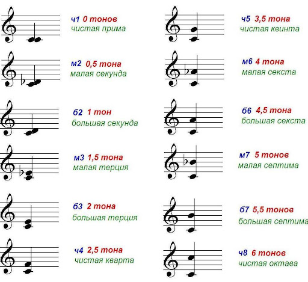
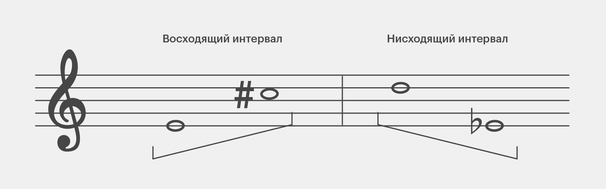

Урок 28. Построение интервалов от звука.
Теория
Построение интервалов от звука — это определение второй ноты, находящейся на нужном расстоянии (интервале) от заданного звука.
- Чтобы построить интервал, нужно знать его ступеневую величину (сколько ступеней) и тоновую величину (сколько тонов и полутонов).
- Например, чтобы построить терцию от До вверх, считаем три ступени: До (1), Ре (2), Ми (3). Получаем интервал До–Ми.
- Если строим интервал вниз, считаем ступени в обратном порядке. Например, терция вниз от Соль: Соль (1), Фа (2), Ми (3) — получаем Соль–Ми.
- Важно учитывать знаки альтерации (диезы, бемоли), чтобы правильно определить тоновую величину интервала.
Построение интервалов помогает разбирать и сочинять музыку, а также развивает музыкальный слух.
Для тренировки попробуйте построить разные интервалы (секунду, терцию, кварту, квинту, октаву) от разных нот вверх и вниз.
Важно уметь строить интервалы как вверх, так и вниз от любого звука.
Упражнения
- Построение интервала: Постройте указанный интервал вверх или вниз от заданного звука (Постройте терцию вверх от До — получится Ми; Постройте кварту вниз от Соль — получится Ре; Постройте квинту вверх от Фа — получится До; Постройте октаву вниз от Ля — получится Ля малой октавы).
- Пение: Пропойте интервалы, построенные от одной ноты вверх и вниз (До, Ми, Фа, Соль, До, Ре, Си, До).
Аудио-примеры
Построение терции, кварты и квинты от До:
Визуальные примеры
Построение интервалов на нотном стане:

Схема построения интервалов вверх и вниз:
